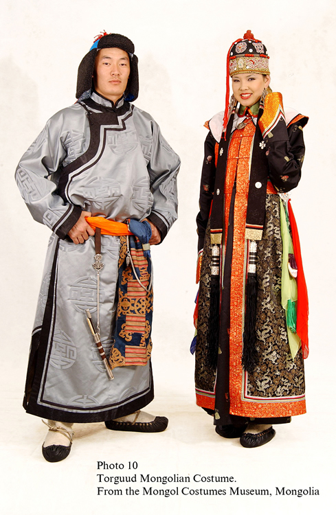

Дээл нь мянган жилийн түүхтэй Монголчуудын үндэсний хувцасны нэг юм. Аливаа улс үндэстэн, ард түмний чухал дурсгал нь үндэсний хувцас мөн бөгөөд хүний нийгмийн түүх олон жилээр тасралтгүй үргэлжлэн хувьсан өөрчлөгдөж, хүний өмссөн хувцас ч хөгжлийнхээ явцад тухайн цаг үеийнхээ нийгэм, соёл шинжлэх ухаан, техникийн хөгжил зэргийн нөлөөнөөс хамааран олон өвөрмөц хэв маяг хэлбэр донжийг бүрдүүлэн бий болгож эцсийн хувилбараа олсон байдаг. Монгол дээлийг аймаг угсаатны ялгарах онцлогоор нь дараах байдлаар ангилдаг. Үүнд: Халх дээл Дөрвөд дээл Буриад дээл Баяд дээл Урианхай дээл Дарьганга дээл Захчин дээл Торгууд дээл Барга дээл Мянгад дээл Үзэмчин дээл Хорчин дээл Хотон дээл Казах дээл Дархад дээл Цаатан дээл Өөлд дээл Монгол үндэсний хувцас нь олон зуун жилийг дамжсан баялаг түүхтэй билээ. Энэ хувцас нь монголчуудын амьдралын хэв маягийг мэдэхэд тусалдаг. Үндэсний хувцас нь тухайн хүрээлэн буй орчин, талаар морь унан давхих, гэрт байхад эсвэл баяр наадамд бүжиглэхээс хамааран өөр өөр байдаг. Уур амьсгал, орчин нөхцөл, жилийн улирлаас хамааран үндэсний хувцас нь олон төрөл байдаг. Зуны улиралд монголчууд тэрлэг, хавар, намрын улиралд хөвөнтэй дээл эсвэл хурган дээл, өвлийн улиралд хонины арьсаар хийсэн цагаан нэхий дээл өмсдөг.
